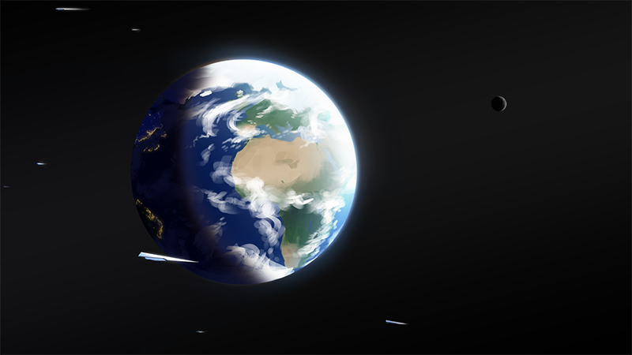

Earth
| Earth | |
|---|---|
| Earth ▸ Sol ▸ Terran Core Quarter | |
|  Earth in 717. | |
| Catalogue name | Sol d |
| Catalogued | Ancient |
| Demonyms | Terrene, Tellurian |
| Physical characteristics | |
| Mass | 5.972 × 1024 kg |
| 1.0 M⊕ | |
| Mean radius | 6,371 km |
| 1.0 R⊕ | |
| Orbital characteristics | |
| Semimajor axis | 149,598,000 km |
| 1.0 AU | |
| Orbital period | 365.26 days |
| Eccentricity | 0.0167 |
| Surface gravity | 9.81 m/s2 |
| 1.0 g⊕ | |
| Sidereal day | 23h 56m 4s |
| Synodic day | 24h |
{kind=link}
Earth (Sol d, Sol-III) is the third planet from the type-G5V star Sol. It is the fifth largest planet body in the Solar system, as well as the densest. It has one natural satellite, Luna, likely formed from a cataclysmic impact with another planet early in the planet’s history.
Earth is the homeworld of Terrankind, as well as the capital and most populated planet of The Terran Federation. It is one of the three political capitals in Juxta Sagittaria, after Ko and Tal.
Biosphere
Life on Earth emerged some 3.8 billion years ago as single-cell life, but multicellular life is approximately a billion years older. Early Terrene life would likely have emerged from oceans, dependent on Earth’s high moisture.
Between 200 and 65 million years ago in its past, Earth was dominated by enormous terrestrial lizards, known as dinosaurs. A mass extinction event, likely an asteroid impact, led to their demise. The extinction of the dinosaurs likely left mammalian organisms the opportunity to diversify, leading to their modern dominance and the derivative evolution of Earth’s sapient species.
Geography
Earth is a temperate garden world with large reserves of water. Over two-thirds of the planet is covered in ocean. Some, with regards to its abundance of water, affectionately refer to Earth as “the blue planet”, in comparison to many other planets. The huge bodies of water give rise to enormous ocean currents that cycle warn and cool water across the planet’s latitudes, affecting planetary climate.
While abundant in water, 97.5% is saline, making it untenable to drink without filtration.
Atmosphere
Earth’s atmosphere is composed of roughly 80% nitrogen gas and 20% oxygen gas, the latter vital to the survival of animal life on Earth. Precipitation varies between rain, sleet, and snow, as well as volume depending on local climate conditions.
Ozone molecules are abundant approximately 20 to 30 kilometres above the surface of the Earth. The layer proetects the surface of the Earth from otherwise harmful ultraviolet radiation. While ozone is hazardous to most multicellular carbon life if inhaled, the layer is too high to warrant any real hazard.
Habitation
Terran civilisation first formed on Earth and is mostly saturated in areas with milder climates, though advances in technology allowed many to live in harsher conditions on the planet.
As of 2717 the planet’s population was was estimated at approximately 16 billion inhabitants, and is expected to remain mostly stable.
Hazards
Although not as extreme as the other planets in its system, Earth’s weather can be dangerous due to its unpredictability. Much of Earth’s weather is driven by the massive amount of water present on its surface, giving rise to colossal storm systems. Blizzards and storms are common in colder regions of the planet; Other severe weather phenomena such as hail and tornadoes also occur on Earth.
Tropical Cyclones
Most famously are Earth’s tropical cyclones, massive rotating storms that form in Earth’s large open oceans with warm water. Storm strength varies depending on various environmental factors. At the very centre of each storm is an area of low pressure, forming a “hole” in the storm system, known as the eye.
Regions closer to the centre of a tropical cyclone receive more severe weather than regions towards the edge. Weather within the eye is, in fact, extremely clear and calm; The border of the eye, known as the eyewall, however, is where weather is most severe, with the most extreme wind speeds, air flow, and precipitation.
Non-Terrenes are often the most vulnerable to Earth cyclones, as the eye often falsely misleads them to believing the storm is over, moments before the intense weather of the eyewall returns.
Geography
The planet’s highly active tectonic plates regularly produce powerful earthquakes and active volcanic activity, though relatively few are devastating. Most seismic activity is concentrated around an area surrounding the Pacific Ocean, dubbed the Ring of Fire. Subsequently, about 75% of Earth’s volcanoes are concentrated within this region. Earthquakes occuring underwater can also produce massive waves known as tsunamis, which can travel hundreds of kilometres before impacting coastlines.
Extraplanetary
In the scope of space, Earth’s system harbours a considerably near asteroid field, although impacts are mitigated from its unusually large moon and the gas giant Jupiter.